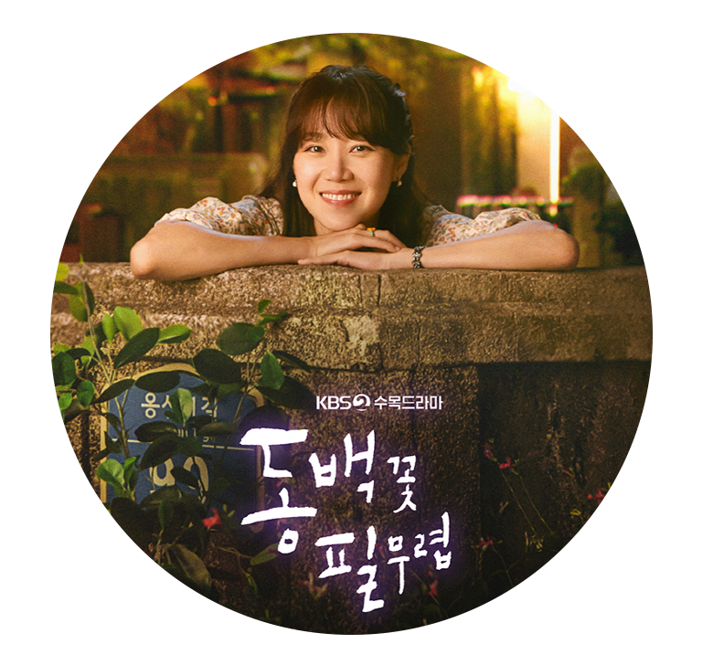

동백꽃 필 무렵
드라마
ㅣ 15세이상 관람가
편 성
ㅣ KBS2 2019.09.18 ~ 방영중 ㅣ (수, 목) 오후 10:00
시청률
ㅣ 13.4%
제작진
ㅣ 연출 : 차영훈 ㅣ 극본 : 임상춘
소 개
ㅣ 편견에 갇힌 맹수 동백을 깨우는, 촌므파탈 화용식이의 폭격형 로맨스 "사랑하면 다 돼!" 이들을 둘러싼 생활밀착형 치정 로맨스 "사랑 같은 소리하네."